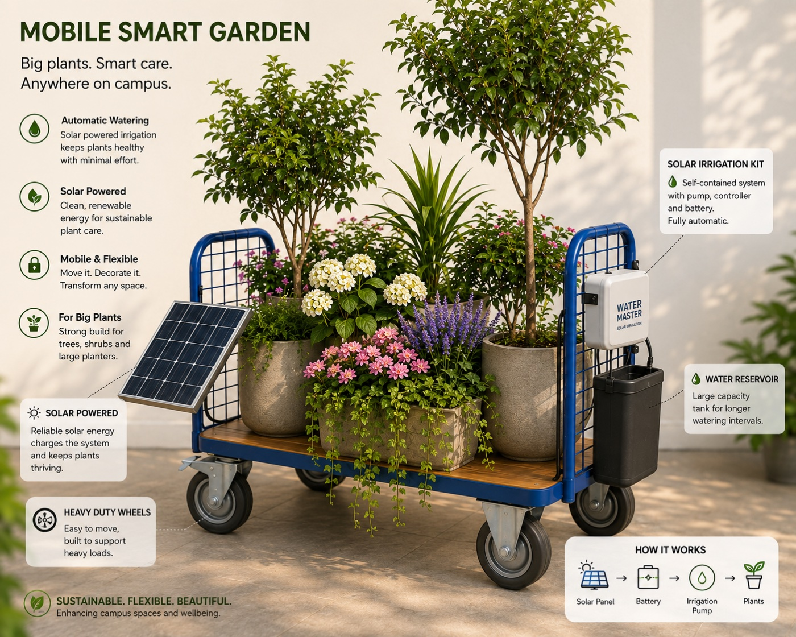
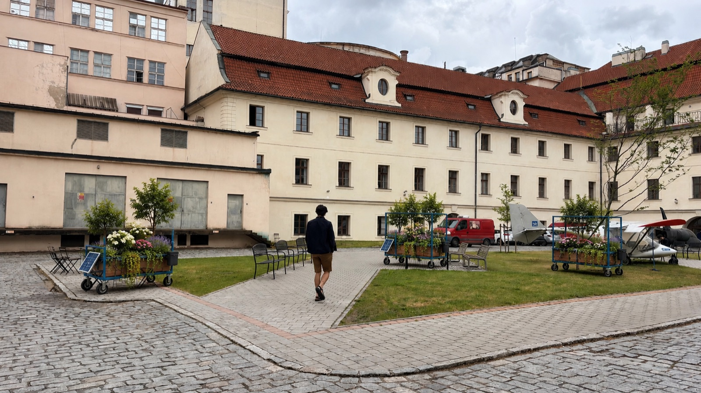

Low risk, high impact
The gardens arrive fully planted and improve the courtyard from the first day. No waiting years for plants to grow.
A sustainability pilot at CTU
Big plants. Smart care. Anywhere on campus. Solar-powered, self-watering planter units on wheels — bringing flexible, beautiful greenery to the Karlovo náměstí courtyard, with no construction required.

The opportunity
Right now, the Karlovo náměstí courtyard is a space that students and staff walk past without stopping. The Self-Sustainable Smart Mobile Gardens turn it into a more attractive and welcoming place for the CTU community — flexibly, sustainably, and without a single infrastructure project.
The gardens arrive fully planted and improve the courtyard from the first day. No waiting years for plants to grow.
No building work or permanent changes. The units run themselves, so no extra workload falls on staff.
Reconfigure the layout for events, seasons, or simply roll the gardens to wherever people gather most.
How it works
Each unit is a mobile cart carrying trees, shrubs and flowering plants, paired with a solar-powered irrigation kit and a water reservoir. The plants thrive with minimal maintenance.
Solar-powered irrigation keeps plants healthy with minimal effort.
Clean, renewable energy charges the system and keeps plants thriving.
Heavy-duty wheels make it easy to move, decorate, and transform any space.
A strong build supports trees, shrubs and large planters.
A large-capacity tank allows longer intervals between refills.
Pump, controller and battery in one unit. Fully automatic.

The pilot
Our pilot introduces three units to the courtyard, each with a different greenery and plant composition. It is a practical, flexible way to increase greenery, improve the campus environment, and show CTU's commitment to sustainability and student wellbeing.
Sustainable. Flexible. Beautiful. — enhancing campus spaces and wellbeing.
Implementation
Purchase materials and equipment. Select suitable plants and containers.
Assemble the three mobile garden stations. Install irrigation systems and test their operation.
Plant installation and final testing. Deploy stations at selected CTU locations. Monitoring and regular maintenance.
Budget
The pilot consists of three identical mobile garden stations. The majority of the budget covers plants, containers and durable equipment that will remain in use for several years.
| Item | Cost per station |
|---|---|
| Mobile cart | 7,360 Kč |
| Solar irrigation kit | 1,500 Kč |
| Water reservoir | 500 Kč |
| Plants & planters | 5,607 Kč |
| Total per station | 14,967 Kč |
Material costs and services. No scholarships or remuneration.
Naming the carts
Each cart will be named after a pioneering woman in computer science and carry a QR code linking here, so students and staff can find out more and engage with the project.
Honouring a pioneer of computer science.
Honouring a pioneer of computer science.
Honouring a pioneer of computer science.
The project will be documented and shared through CTU communication channels, LinkedIn and social media. Follow along, scan a cart's QR code, and tell us where the gardens should roll next.